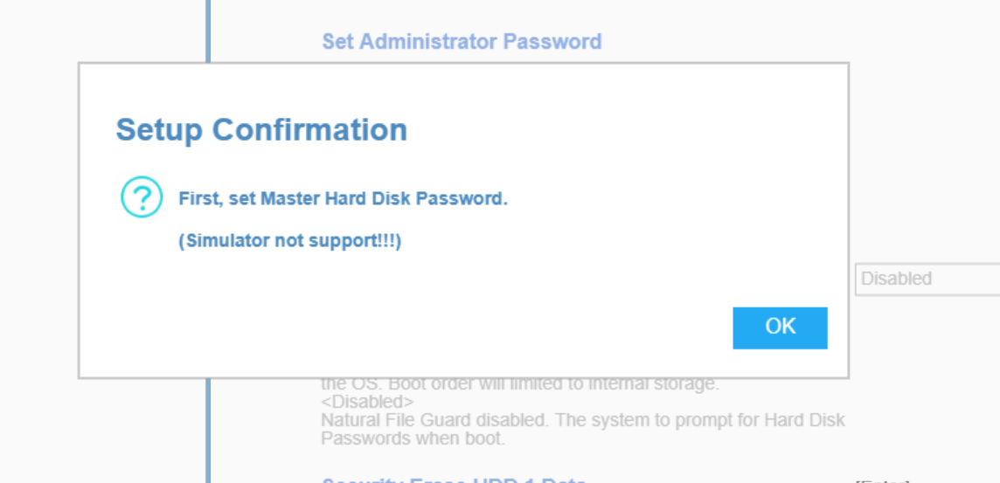
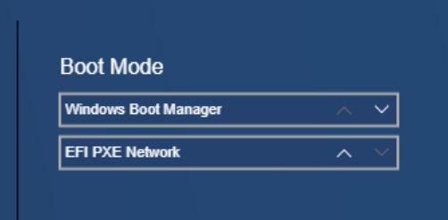

El primer paso es establecer una contraseña de la administración de la BIOS. Debe ser una contraseña segura.

Después debemos poner una contraseña de usuario, también debe ser una contraseña segura.
También debemos establecer una contraseña en el disco duro (HDD). Para ello, debemos establecer una contraseña segura para el administrador.

Debemos desactivar el arranque desde USB para evitar que se pueda iniciar el sistema operativo desde cualquier dispositivo externo.

Establecemos el orden de arranque, en este caso elegimos Windows Boot Manager para que arranque desde el sistema operativo que tenemos en el disco, el cual está asegurado por nosotros.
El otro método de arranque (EFI PXE Network) sirve para iniciar desde la red, lo que podría representar un vector de ataque.

Finalmente, activamos el Secure Boot para que solo se pueda iniciar Windows y evitar cargas de sistemas no autorizadas.

- La configuración puede resetearse con Clear CMOS (quitar pila o jumper).
- Usar protección física para evitar accesos no autorizados.
- Algunos modelos admiten contraseñas maestras o almacenamiento de password no volátil.